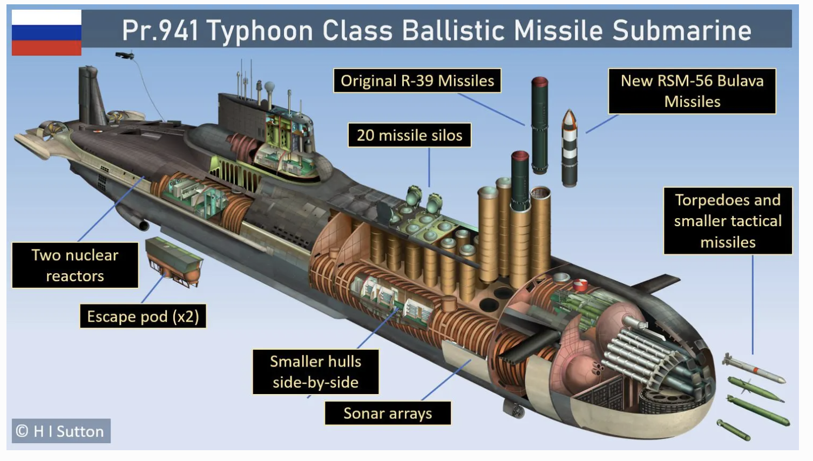

Details of Naval Technology
- Caterpillar Drive (Magnetohydrodynamic Drive) (fictional in that capacity): : Presented in the film as a silent, moving part-free propulsion system using magnets and electric current to accelerate seawater, effectively making the sub nearly invisible to sonar.
- Typhoon-Class Submarine: The film heavily features the real Soviet
- Typhoon-class submarine, known for its massive size, 20 R-39 nuclear missiles, and multiple pressure hulls for enhanced survivability.
-
Towed Array Sonar: Used by US submarines (such as the USS Dallas) to detect low-frequency sound emissions from other vessels, central to the film’s cat-and-mouse plot.

Fig.1. Typhoon-class Soviet submarine.
the inspiration for Red October.